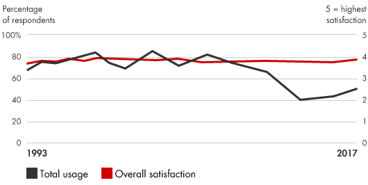
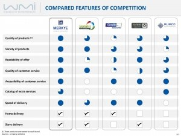

📘معرفی ابزار
عملیات بنچمارک (یا الگوبرداری) از طریق شناسایی و اعمال بهترین تجربیات و شیوههای ارایهشده برای عملیات و فروش، عملکرد را بهبود میبخشد. مدیران عملکرد محصولات یا فرآیندهای خارجی خود را با شرکتهای رقیب و بهترین شرکتها و با عملیاتهای دیگری که فعالیتهای مشابهی را در شرکتهای خود انجام میدهند مقایسه میکنند. هدف الگوبرداری یافتن مثالهایی از عملکرد برتر و درک فرایندها و روالهای محرک عملکرد آنها است. سپس شرکتها عملکرد خود را با هماهنگ کردن و ترکیب بهترین تجارب در عملیات خود بهبود میبخشند. البته هدف از این کار نباید تقلید باشد، بلکه لازم است با نوآوری همراه باشد.
🆕بهروزرسانی ۱۴۰۵
این بخش در نسخهٔ آنلاین ۱۴۰۵ افزوده شده است. متن اصلی کتاب (آبان ۱۳۹۹) در بخشهای بعد بدون تغییر آمده است.
آمار و شواهد تازه
- نمونهٔ شاخص مرجع معتبر: شاخص تجربهٔ مشتری Forrester (CX Index) در ۲۰۲۵ نشان داد کیفیت تجربهٔ مشتری در آمریکا برای چهارمین سال پیاپی افت کرده و به میانگین ۶۸٫۳ از ۱۰۰ رسیده است. (منبع: Forrester)
- شاخص رضایت مشتری آمریکا (ACSI) نیز در سهماههٔ چهارم ۲۰۲۵ روی ۷۶٫۹ ثابت بود؛ سطحی نزدیک به یک دهه پیش. (منبع: ACSI)
چه چیزی تغییر کرده؟
الگوبرداری امروز کمتر به مقایسهٔ یکبارهٔ سالانه و بیشتر به پایش مداوم با دادههای عمومی و شاخصهای صنعتی نزدیک است. در محیط تحریم و دسترسی محدود به دادههای رقبا، ترکیب «الگوبرداری داخلی» (مقایسهٔ واحدهای خود سازمان) با شاخصهای عمومی بینالمللی راهی عملی است.
نمونه ابزارها و نرمافزارهای امروزی
نامها صرفاً نمونهاند و توصیه یا تبلیغ تجاری نیستند؛ شرایط دسترسی و تحریمها را برای سازمان خود بررسی کنید.
منابع این بخش
🧩فرآیند اجرا
- یک محصول، خدمات و یا فرآیند را برای بنچمارک انتخاب کنید
- تعیین معیارهای کلیدی عملکرد
- شرکتها و مناطق داخلی را برای بنچمارک انتخاب کنید
- جمعآوری اطلاعات درباره عملکرد و تجربیات
- تجزیه و تحلیل دادهها و شناسایی فرصتها برای بهبود
- تطبیق و اجرای بهترین شیوهها، تعیین اهداف معقول و اطمینان از پذیرش فراگیر در سطح شرکت
💼موارد استفاده در کسبوکار
- بهبود عملکرد: شناسایی روشهای بهبود طراحی محصول و افزایش کارآیی.
- شناخت نسبی موارد هزینه: نشان دادن جایگاه هزینه نسبی یک شرکت و شناسایی فرصتهای بهبود.
- کسب مزیت راهبردی: کمک به تمرکز بر تواناییهایی که برای ایجاد مزیت راهبردی حیاتی هستند.
- افزایش یادگیری سازمانی: همرسانی تجربیات و ایدههای جدید در شرکت.
📈میزان محبوبیت در طی زمان

🧪نمونه ابزار / الگو

در این تصویر نمونه یک بنچ مارک بین ویژگیهای کلیدی چند شرکت مختلف نشان داده شده است. این نمونه بنچ مارک کمک میکند که نقاط قوت و ضعف در مقایسه با رقبا بهتر شناسایی شود و شرکت بتواند روی بهبود کارکردهای خود همراه با نوآوری متمرکز شود.
⬇️چکلیست قابلدانلود
چکلیست اجرایی این ابزار را دانلود و در سازمان خود تکمیل کنید. گامها از فرآیند اجرای همین صفحه برداشته شدهاند و ستونهای مسئول، موعد و وضعیت برای پیگیری تیمی خالی گذاشته شده است.
⬇ دانلود چکلیست (Word) · الگوبرداری📚مراجع مطالعه بیشتر
- Bain & Company, Benchmarking: https://www.bain.com/insights /management-tools-benchmarking
- American Productivity and Quality Center. www.apqc.org
- Bogan, Christopher E., and Michael J. English. Benchmarking for Best Practices: Winning Through Innovative Adaptation. McGraw-Hill, 1994.
- Boxwell, Robert J., Jr. Benchmarking for Competitive Advantage. McGraw-Hill, 1994.
- Camp, Robert C. Benchmarking: The Search for Industry Best Practices That Lead to Superior Performance. Productivity Press, 2006.
- Coers, Mardi, Chris Gardner, Lisa Higgins, and Cynthia Raybourn. Benchmarking: A Guide for Your Journey to Best-Practice Processes. American Productivity and Quality Center, 2001.
- Czarnecki, Mark T. Managing by Measuring: How to Improve Your Organization’s Performance Through Effective Benchmarking. AMACOM, 1999.